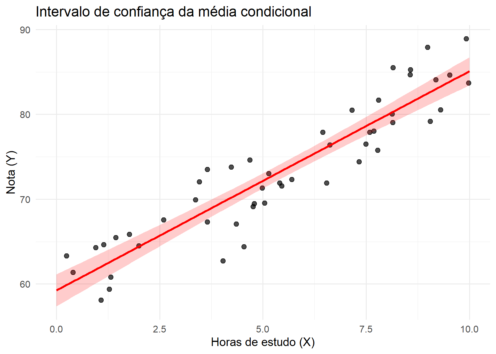
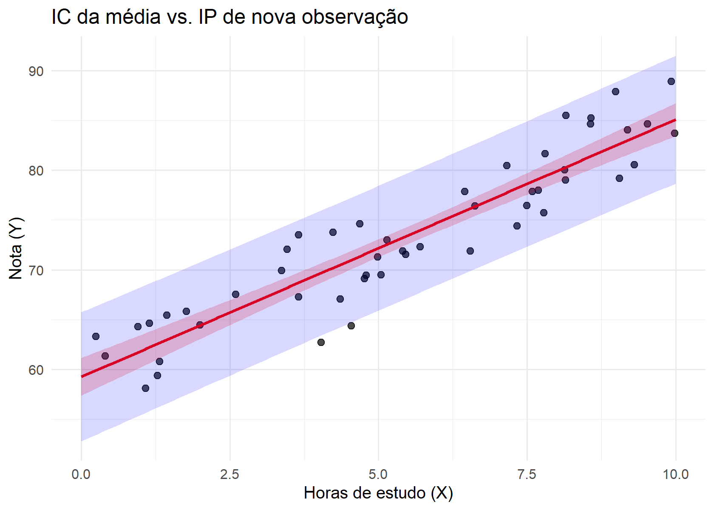

6 Inferência no MRLS com erros normais
6.1 Por que assumir normalidade?
Até aqui, estudamos as propriedades dos estimadores de mínimos quadrados ordinários (MQO) no Modelo de Regressão Linear Simples (MRLS). Mostramos que \(\hat\beta_0\) e \(\hat\beta_1\) são não viesados, possuem variâncias explícitas e, pelo Teorema de Gauss–Markov, são os melhores estimadores lineares não viesados (BLUE) sob as hipóteses clássicas de exogeneidade, homoscedasticidade e independência dos erros (ver Kutner et al. (2005); Montgomery; Peck; Vining (2021)).
No entanto, até este ponto conhecemos apenas momentos de primeira e segunda ordem das distribuições amostrais dos estimadores, ou seja, suas esperanças e variâncias. Não conhecemos suas distribuições exatas. De inferência, já sabemos que um estimador ser não viesado e eficiente dentro de uma classe não é suficiente para construir intervalos de confiança exatos ou realizar testes de hipóteses com nível de significância controlado em amostras finitas.
Para superar essa limitação, acrescentamos uma hipótese mais forte e específica: a normalidade dos erros,
\[ \varepsilon_i \sim N(0,\sigma^2), \quad i=1,2,\dots,n, \quad \text{independentes}. \]
Ou seja, cada erro segue uma distribuição normal com média zero e variância constante \(\sigma^2>0\), sendo ainda independentes entre si.
6.1.1 Estrutura probabilística do MRLS com erros normais
Com essa suposição adicional, a formulação probabilística do modelo passa a ser
\[ Y_i = \beta_0 + \beta_1 X_i + \varepsilon_i, \quad \varepsilon_i \sim N(0,\sigma^2). \]
Logo, condicionalmente a \(X_i\), temos
\[ Y_i \mid X_i \sim N(\beta_0 + \beta_1 X_i, \, \sigma^2). \]
Isso significa que o modelo deixa de ser apenas um modelo para a média condicional e passa a especificar completamente a distribuição condicional de \(Y\) dado \(X\). Em outras palavras, a normalidade fornece não apenas a forma do valor esperado, mas também a forma funcional da incerteza em torno dessa média.
6.1.2 Consequências conceituais da normalidade
A introdução da hipótese de normalidade tem implicações precisas:
O MRLS continua sendo um modelo para a média condicional, mas agora a variabilidade em torno dessa média é descrita por uma estrutura probabilística completamente especificada.
As hipóteses de Gauss–Markov já asseguravam que os estimadores de MQO eram BLUE, mas não determinavam suas distribuições exatas. A normalidade preenche exatamente essa lacuna.
Como combinações lineares de variáveis normais são normais, os estimadores \(\hat\beta_0\) e \(\hat\beta_1\), que são combinações lineares dos \(Y_i\), passam a ter distribuições normais exatas em amostras finitas (ver Montgomery; Peck; Vining (2021)).
A estatística baseada na soma dos quadrados dos resíduos passa a ter distribuição qui-quadrado, o que permite derivar distribuições \(t\) e \(F\) de forma exata (ver Kutner et al. (2005)).
Do ponto de vista metodológico, a normalidade não é necessária para a obtenção das propriedades de não viés ou eficiência relativa, mas é uma boa alternativa para a construção de procedimentos inferenciais exatos em amostras finitas. Essa hipótese não altera os estimadores de MQO, mas altera o que podemos afirmar sobre sua variabilidade e sobre a incerteza associada às estimativas.
Portanto, a introdução da normalidade transforma o MRLS de um modelo com propriedades ótimas em termos de média e variância em um modelo com estrutura probabilística completa, apto a sustentar intervalos de confiança e testes de hipóteses com boas propriedades.
6.2 Distribuições amostrais no MRLS com erros normais
Sob a hipótese adicional de normalidade dos erros no MRLS, podemos derivar as distribuições amostrais exatas dos principais estimadores do modelo. Esse é o ponto de transição entre propriedades puramente algébricas (não viés, variância mínima dentro de uma classe) e inferência estatística formal.
Recordemos que, sob normalidade,
\[ \varepsilon_i \sim N(0,\sigma^2), \quad \text{independentes}. \]
Como os estimadores de MQO podem ser escritos como combinações lineares dos \(Y_i\), e cada \(Y_i\) é normal condicionalmente a \(X_i\), segue que \(\hat\beta_0\) e \(\hat\beta_1\) são também normalmente distribuídos. Essa conclusão decorre do fato fundamental de que combinações lineares de variáveis normais independentes permanecem normais (ver Montgomery; Peck; Vining (2021)).
6.2.1 Distribuição de \(\hat\beta_0\), \(\hat\beta_1\)
Para a inclinação, obtemos:
\[ \hat\beta_1 \sim N\!\left(\beta_1, \, \frac{\sigma^2}{S_{xx}}\right), \qquad S_{xx} = \sum_{i=1}^n (X_i - \bar X)^2. \]
Para o intercepto:
\[ \hat\beta_0 \sim N\!\left(\beta_0, \, \sigma^2\left(\frac{1}{n}+\frac{\bar X^2}{S_{xx}}\right)\right). \]
A demonstração dessas distribuições pode ser vista no Apêndice de Demonstrações {#demo}, onde se explora explicitamente a representação linear dos estimadores em função dos \(Y_i\) e a estrutura de variância-covariância do vetor de respostas.
Além disso, para o estimador da variância residual,
\[ s^2 = \frac{SQRes}{n-2}, \qquad SQRes = \sum_{i=1}^n (Y_i - \hat Y_i)^2, \]
vale o resultado fundamental:
\[ \frac{(n-2)s^2}{\sigma^2} \sim \chi^2_{n-2}. \]
Esse resultado decorre da decomposição ortogonal do vetor \(Y\) em componente ajustada e componente residual, cuja demonstração também pode ser consultada no Apêndice {#demo} (ver Kutner et al. (2005)). A perda de dois graus de liberdade reflete a estimação dos dois parâmetros \(\beta_0\) e \(\beta_1\).
É importante destacar que a normalidade não altera os estimadores de MQO: as expressões de \(\hat\beta_0\), \(\hat\beta_1\) e \(s^2\) permanecem as mesmas. O ganho está em outro ponto: ela fornece uma descrição probabilística completa da variabilidade desses estimadores, algo que as hipóteses de Gauss–Markov não entregam por si só.
Em particular, o resultado
\[ \frac{(n-2)s^2}{\sigma^2} \sim \chi^2_{n-2} \]
é a peça-chave que permite obter, de forma exata, as distribuições \(t\) e \(F\) usadas em intervalos de confiança e testes de hipóteses. Os \(n-2\) graus de liberdade refletem a estimação de \((\beta_0,\beta_1)\) e garantem que \(s^2\) seja não viesado para \(\sigma^2\).
6.3 Predição pontual da média condicional
A predição pontual é o primeiro passo para inferir sobre a relação média entre \(Y\) e \(X\) no MRLS. Antes de introduzir intervalos, é útil explicitar que os valores ajustados são quantidades aleatórias (pois dependem da amostra) e, sob normalidade, possuem distribuição conhecida.
6.3.1 Distribuição dos valores ajustados
Para um valor genérico \(X_0\), definimos o valor ajustado (ou média condicional estimada) como
\[ \hat{\mu}(X_0) \;=\; \hat\beta_0 + \hat\beta_1 X_0. \]
Sob erros normais, \(\hat\beta_0\) e \(\hat\beta_1\) são combinações lineares dos \(Y_i\) e, portanto, \(\hat{\mu}(X_0)\) também é uma combinação linear de variáveis normais. Assim, \(\hat{\mu}(X_0)\) é normalmente distribuído (ver Montgomery; Peck; Vining (2021)).
Além disso, sua esperança é
\[ E[\hat{\mu}(X_0)] = \beta_0 + \beta_1 X_0 = \mu(X_0), \]
isto é, \(\hat{\mu}(X_0)\) é não viesado para a média condicional.
Sua variância é
\[ Var(\hat{\mu}(X_0)) = \sigma^2\left[ \frac{1}{n} + \frac{(X_0-\bar X)^2}{S_{xx}} \right], \qquad S_{xx}=\sum_{i=1}^n (X_i-\bar X)^2, \]
de modo que
\[ \hat{\mu}(X_0)\sim N\!\left(\mu(X_0),\; \sigma^2\left[\frac{1}{n} + \frac{(X_0-\bar X)^2}{S_{xx}}\right]\right). \]
Essa expressão evidencia um aspecto estrutural da regressão: a incerteza sobre a média ajustada é menor perto de \(\bar X\) e aumenta à medida que \(X_0\) se afasta do centro dos dados, refletindo a geometria do ajuste por mínimos quadrados (ver Kutner et al. (2005)).
6.3.2 Predição pontual
A predição pontual da resposta média em \(X_0\) é, portanto,
\[ \hat{Y}_0 = \hat{\mu}(X_0)=\hat\beta_0+\hat\beta_1X_0, \]
que corresponde à função de regressão estimada avaliada em \(X_0\). É importante enfatizar que \(\hat{Y}_0\) se refere à média condicional \(E[Y\mid X_0]\), e não ao valor de uma nova observação individual.
6.3.3 Limitação da predição pontual
Embora \(\hat{Y}_0\) forneça uma estimativa central, ela não quantifica a incerteza associada ao ajuste. Por isso, em aplicações, a predição pontual deve ser acompanhada de:
- um intervalo de confiança para \(\mu(X_0)\), quando o interesse é a tendência média; ou
- um intervalo de predição, quando o objetivo é prever uma nova observação individual.
Essas duas construções serão desenvolvidas nas próximas subseções (ver Kutner et al. (2005); Montgomery; Peck; Vining (2021)).
Considere o seguinte gráfico, onde o ponto destacado corresponde a \(\hat Y_0\), isto é, à estimativa da média condicional em \(X_0\). Observe que o valor pontual não informa, por si só, o grau de incerteza associado à estimativa, questão que será tratada na próxima subseção.
6.4 Intervalos de confiança no MRLS
Na seção anterior vimos que, sob a hipótese de erros normais, os estimadores de MQO possuem distribuições normais quando a variância \(\sigma^2\) é conhecida. No entanto, na prática, \(\sigma^2\) é desconhecida e deve ser substituída por seu estimador não viesado
\[ s^2 = \frac{SQRes}{n-2}, \qquad SQRes = \sum_{i=1}^n (Y_i-\hat Y_i)^2. \]
Essa substituição tem consequência direta na forma das distribuições amostrais: ao padronizarmos os estimadores utilizando \(s\) em vez de \(\sigma\), as estatísticas resultantes deixam de seguir a normal padrão e passam a seguir distribuições \(t\) de Student com \(n-2\) graus de liberdade (ver Kutner et al. (2005); Montgomery; Peck; Vining (2021)).
Essa mudança decorre do fato de que
\[ \frac{(n-2)s^2}{\sigma^2} \sim \chi^2_{n-2}, \]
e de que \(\hat\beta_0\) e \(\hat\beta_1\) são independentes de \(s^2\) sob normalidade dos erros, resultado cuja demonstração pode ser consultada no Apêndice de Demonstrações {#demo}.
6.4.1 Intervalos para \(\beta_0\), \(\beta_1\)
Para a inclinação, a estatística
\[ T_{\beta_1} = \frac{\hat\beta_1 - \beta_1} {s/\sqrt{S_{xx}}}, \qquad S_{xx}=\sum_{i=1}^n (X_i-\bar X)^2. \]
segue distribuição t de Student com \(n-2\) graus de liberdade
\[ T_{\beta_1} \sim t_{n-2}. \]
Analogamente, para o intercepto, temos a mesma distribuição t de Student com \(n-2\) graus de liberdade
\[ T_{\beta_0} = \frac{\hat\beta_0 - \beta_0} {s\sqrt{\tfrac{1}{n}+\tfrac{\bar X^2}{S_{xx}}}} \sim t_{n-2}. \]
A demonstração formal dessas distribuições padronizadas pode ser vista no Apêndice {#demo}, onde se utiliza a independência entre estimadores lineares normais e a soma de quadrados residual.
Com base nessas estatísticas, os intervalos de confiança de nível \((1-\alpha)\times 100\%\) são dados por
\[ IC_{1-\alpha}(\beta_0) = \hat\beta_0 \pm t_{n-2;1-\alpha/2}\; s\sqrt{\frac{1}{n}+\frac{\bar X^2}{S_{xx}}} \]
e
\[ IC_{1-\alpha}(\beta_1) = \hat\beta_1 \pm t_{n-2;1-\alpha/2}\; \frac{s}{\sqrt{S_{xx}}}. \]
Aqui, \(t_{n-2;1-\alpha/2}\) denota o quantil superior da distribuição \(t\) com \(n-2\) graus de liberdade.
6.4.2 Intervalo de confiança para a média condicional
Anteriormente vimos que a predição pontual da média condicional em \(X_0\) é
\[ \hat{\mu}(X_0) = \hat{\beta}_0 + \hat{\beta}_1 X_0, \]
estimativa natural de
\[ \mu(X_0) = E[Y \mid X_0]. \]
Sob a hipótese de erros normais, a combinação linear \(\hat{\mu}(X_0)\) possui distribuição normal quando \(\sigma^2\) é conhecido. Como, na prática, \(\sigma^2\) é substituído por seu estimador não viesado \(s^2 = SQ_{Res}/(n-2)\), a estatística padronizada
\[ T = \frac{\hat{\mu}(X_0) - \mu(X_0)} {s \sqrt{\frac{1}{n} + \frac{(X_0-\bar X)^2}{S_{xx}}}} \]
segue distribuição \(t\) de Student com \(n-2\) graus de liberdade (ver Kutner et al. (2005); Montgomery; Peck; Vining (2021)). A demonstração formal pode ser consultada no Apêndice de Demonstrações {#demo}.
Consequentemente, um intervalo de confiança de nível \((1-\alpha)\times 100\%\) para a média condicional é
\[ IC_{1-\alpha}\left[\mu(X_0)\right] = \hat{\mu}(X_0) \pm t_{n-2;\,1-\alpha/2}\; s \sqrt{\frac{1}{n} + \frac{(X_0-\bar X)^2}{S_{xx}}}, \]
em que:
- \(s^2 = SQ_{Res}/(n-2)\) é a variância residual estimada;
- \(S_{xx} = \sum_{i=1}^n (X_i-\bar X)^2\);
- o termo dentro da raiz representa a variabilidade da estimativa da média condicional.
O fator
\[ \frac{1}{n} + \frac{(X_0-\bar X)^2}{S_{xx}} \]
possui interpretação estrutural clara. Ele combina:
\(\frac{1}{n}\): componente associado à incerteza na estimação do intercepto;
\(\frac{(X_0-\bar X)^2}{S_{xx}}\): componente associado à incerteza da inclinação e ao afastamento de \(X_0\) em relação ao centro da amostra.
Essa decomposição revela que a precisão da estimativa depende da posição de \(X_0\) no domínio observado. O intervalo é:
- mais estreito quando \(X_0=\bar X\);
- mais largo à medida que \(X_0\) se afasta da média amostral.
Esse comportamento decorre diretamente da geometria da regressão linear e da estrutura de projeção ortogonal subjacente aos mínimos quadrados.
É fundamental enfatizar que esse intervalo refere-se à média condicional
\[ \mu(X_0) = E[Y \mid X_0], \]
e não a uma nova observação individual. Ele quantifica a incerteza sobre a tendência média da resposta para a condição \(X=X_0\).
Dicas de uso
- Utilize este intervalo quando o objetivo for inferir sobre a tendência média da resposta para um valor específico do regressor.
- Não o confunda com o intervalo de predição para um novo indivíduo, que incorpora variabilidade adicional do erro aleatório.
A figura a seguir ilustra um intervalo de confiança de 95% para a média condicional ao longo do domínio observado.
Observe qye banda em torno da reta representa a incerteza sobre \(\mu(X)\) ao longo dos valores observados de \(X\). Note que ela é mais estreita nas proximidades de \(\bar X\) e se alarga progressivamente nos extremos do domínio amostral, refletindo o aumento da variância de \(\hat{\mu}(X_0)\).

6.4.3 Interpretação frequentista e significado dos intervalos
A interpretação frequentista de um intervalo de confiança de nível \(1-\alpha\) é a seguinte: se o experimento fosse repetido um número grande de vezes e sob as mesmas condições, aproximadamente \((1-\alpha)\times 100\%\) dos intervalos construídos conteriam o verdadeiro parâmetro. O parâmetro é fixo; o que varia é o intervalo, pois ele depende da amostra observada.
A introdução da distribuição \(t\) de Student desempenha papel essencial nesse contexto. Ao substituir \(\sigma\) por seu estimador \(s\), incorporamos a incerteza adicional decorrente da estimação da variância. Essa correção é particularmente relevante em amostras pequenas: quanto menor \(n\), mais pesada é a cauda da distribuição \(t_{n-2}\) e, consequentemente, mais largos são os intervalos. À medida que \(n\) cresce, a distribuição \(t_{n-2}\) converge para a normal padrão, e os intervalos passam a se aproximar daqueles que seriam obtidos se \(\sigma^2\) fosse conhecido.
Os intervalos são centrados em \(\hat\beta_0\) e \(\hat\beta_1\) porque esses estimadores são não viesados. Em média, as retas ajustadas coincidem com a reta verdadeira; os intervalos quantificam precisamente a incerteza em torno dessa centralidade.
É fundamental distinguir os diferentes objetos inferenciais:
- O intervalo para \(\beta_0\) e \(\beta_1\) refere-se a parâmetros estruturais do modelo.
- O intervalo para \(\mu(X_0)=E[Y\mid X_0]\) refere-se à média condicional.
- Nenhum desses intervalos corresponde à previsão de uma nova observação individual.
A distinção entre inferência sobre a média condicional e previsão individual é conceitualmente importante, pois a segunda incorpora não apenas a incerteza na estimação dos parâmetros, mas também a variabilidade intrínseca do processo aleatório. Essa diferença será aprofundada na subseção seguinte.
6.5 Intervalo de predição para nova observação
Até aqui construímos intervalos de confiança para a média condicional \(\mu(X_0)=E[Y\mid X_0]\). No entanto, muitas aplicações exigem algo diferente: prever o valor de uma nova observação individual associada a \(X_0\).
Se uma nova unidade experimental for observada no mesmo valor \(X_0\), seu modelo é
\[ Y_{\text{novo}}(X_0) = \beta_0 + \beta_1 X_0 + \varepsilon_{\text{novo}}, \]
em que \(\varepsilon_{\text{novo}} \sim N(0,\sigma^2)\) e é independente dos erros da amostra original.
A diferença conceitual é que agora não estamos estimando apenas a média condicional, mas prevendo uma realização específica que contém, além da incerteza na estimação dos parâmetros, a variabilidade intrínseca do erro aleatório.
Portanto, a quantidade relevante é
\[ Y_{\text{novo}}(X_0) - \hat{\mu}(X_0), \]
cuja variância é
\[ Var\!\left[Y_{\text{novo}}(X_0) - \hat{\mu}(X_0)\right] = \sigma^2 \left[ 1 + \frac{1}{n} + \frac{(X_0-\bar X)^2}{S_{xx}} \right]. \]
O termo adicional “\(+1\)” aparece porque a nova observação contém um erro próprio, independente daquele utilizado na estimação dos parâmetros. A demonstração formal dessa variância pode ser consultada no Apêndice de Demonstrações {#demo} (ver Kutner et al. (2005); Montgomery; Peck; Vining (2021)).
Padronizando essa quantidade por \(s\), obtemos uma estatística que segue distribuição t de Student com \(n-2\) graus de liberdade (\(t_{n-2}\)) sob normalidade dos erros. Assim, o intervalo de predição de nível \((1-\alpha)\times 100\%\) é
\[ IC\!\left[Y_{\text{novo}}(X_0)\right] = \hat{\mu}(X_0) \pm t_{n-2;\,1-\alpha/2}\; s \sqrt{ 1 + \frac{1}{n} + \frac{(X_0-\bar X)^2}{S_{xx}} }. \]
Comparando com o intervalo para a média condicional, temos
\[ \hat{\mu}(X_0) \pm t_{n-2;\,1-\alpha/2}\; s \sqrt{ \frac{1}{n} + \frac{(X_0-\bar X)^2}{S_{xx}} }. \]
Daí, vemos claramente a presença do termo adicional \(1\) dentro da raiz. Esse termo representa a variabilidade individual irreducível do processo aleatório.
Consequentemente:
- O intervalo de predição é sempre mais largo que o intervalo de confiança da média.
- A diferença entre eles é tanto maior quanto maior for \(\sigma^2\).
- Ambos se alargam quando \(X_0\) se afasta de \(\bar X\), refletindo a incerteza adicional associada à extrapolação.
O intervalo de predição fornece um conjunto de valores plausíveis para uma nova observação individual, e não para a média populacional. Em termos frequentistas, se o processo fosse repetido nas mesmas condições, aproximadamente \((1-\alpha)\times 100\%\) desses intervalos conteriam a nova observação gerada pelo modelo.
Dica prática
- Use intervalo de confiança quando o objetivo for inferir sobre a tendência média.
- Use intervalo de predição quando o interesse for antecipar o valor de um novo indivíduo.
A figura a seguir ilustra simultaneamente o intervalo de confiança para a média e o intervalo de predição para nova observação. Comparando as bandas, perceba que o intervalo de predição é sempre mais largo que o de confiança. Isso ocorre porque ele incorpora a variabilidade individual das novas observações, além da incerteza da média.

Advertência sobre extrapolação
As expressões obtidas para o intervalo de predição são válidas para qualquer valor numérico \(X_0\). No entanto, é fundamental distinguir entre interpolação (quando \(X_0\) pertence ao intervalo observado da amostra) e extrapolação (quando \(X_0\) está fora do domínio observado de \(X\)).
Seja o intervalo amostral observado \[ X_{(min)} \leq X_i \leq X_{(max)}. \]
Quando \(X_0 \in [X_{(min)}, X_{(max)}]\), o modelo está sendo utilizado em uma região sustentada pelos dados. Nesse caso, embora o intervalo possa se alargar à medida que \(X_0\) se afasta de \(\bar X\), a inferência permanece ancorada na informação empírica disponível.
Por outro lado, quando \(X_0\) está fora desse intervalo, ocorre extrapolação. Nessa situação, a validade formal da expressão algébrica do intervalo permanece, mas sua confiabilidade prática pode ser comprometida, pois o modelo passa a depender fortemente da suposição de linearidade fora da região observada. Pequenas violações da forma funcional podem produzir erros substanciais de predição.
Como destacam Kutner et al. (2005) e Montgomery; Peck; Vining (2021), a regressão linear deve ser utilizada com cautela fora do domínio amostral, pois o comportamento da relação entre \(X\) e \(Y\) além dos dados observados não é garantido pelo modelo ajustado. Assim, intervalos de predição em extrapolação tendem a ser não apenas mais largos, mas também potencialmente menos representativos do processo real.